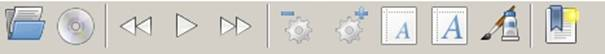
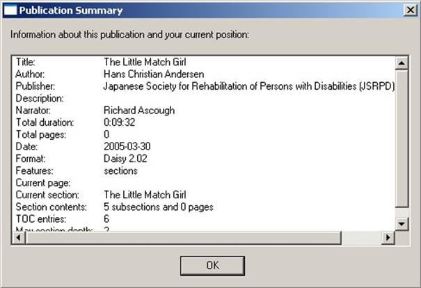

AMIS Brukarrettleiing
Denne brukarrettleiinga gir ein kort introduksjon til AMIS, og omfattar funksjonalitet, krav og valmoglegheiter. For ei oversikt over alle funksjonar viser vi til tastatursnarvegar i hjelpemenyen.
Kva er AMIS?

AMIS står forAdaptiveMultimediaInformationSystem.
AMIS er ein programvare som kan nyttast for å lese DAISY-bøker. Programvaren har ein opplesingsfunksjon. Dette inneber at det ikkje er krav om spesialtilpassa skjermlesarprogram for å ta i bruk AMIS. AMIS er ein gratis programvare med opa kjeldekode. Programmet er omsett til ei rekkje språk. Gå til http://amisproject.org for å laste ned språkpakkar til AMIS.
Kva er DAISY?

DAISY står for Digital Accessible Information SYstem. DAISY-bøker er tilrettelagde lydbøker med ei rekkje navigasjonsmoglegheiter, som overskrifter, sidenummerering, fotnotar, bokstruktur og bokmerke. Desse mogleggjer rask navigering i boka.
DAISY standarden er ein global standard, utvikla av DAISY-konsortiet. DAISY konsortiet blei danna i 1996 og består av organisasjonar, med representantar frå alle verdsdelar, som arbeider for betre tilgjengelegheit til tekst og informasjon for personar som av ulike årsaker ikkje kan lese trykt tekst.
Du kan lære meir om DAISY her: http://daisy.org.
Format
AMIS støttar følgjande format:
- DAISY 2.02
- DAISY 3 (også kjent som: ANSI/NISO z39.86-2005)
Systemkrav
- Windows XP, Windows Vista eller Windows 2000
- DirectX 9 eller 10
- SAPI 5.1 tekst-til-tale motor (kun XP).
- Internet Explorer 7 (Andre versjonar vil fungere, men dette er den tilrådde versjonen.)
- 50 MB ledig harddisk plass
Installasjonsprogrammet til AMIS vil gi beskjed dersom enkelte komponentar skulle mangle.
Skjermbilete
AMIS har to visingsmodi, standard og enkel. Ved oppstart er standardvising valt. Dette kan endrast i menyen innstillingar. Standard visingsmodus består av fire hovuddelar: ein meny, ei verktøyline, eit navigasjonsvindauge og eit innhaldsvindauge.

Skjermbilete i AMIS
Verktøylina har elleve ikon: opne bok, opne CD, gå til førre setning, spel av/pause, gå til neste setning, reduser hastigheita, auk hastigheita, mindre skrift, større skrift, endre sidestil og legg til bokmerke.

Verktøylina
Navigasjonsvindauget inneheld ei eller fleire faner, avhengig av innhaldet i boka. Den første fana er alltid ei hierarkisk liste over delar eller kapittel. Den andre fana inneheld sidetal (dersom boka har sidetal). Deretter følgjer eventuelt ei tredje fane med fotnotar, figurar osb. Kvar type er representert i ei eiga fane.

Navigasjonsvindauget
Den enkle visingsmodusen består av to hovuddelar: eit innhaldsvindauge og ei verktøyline nedst på skjermen. Verktøylina har fem ikon: gå til førre setning, spel av/pause, gå til neste setning, endre sidestil, byt til standard visingsmodus. Enkel visingsmodus har verken meny- eller navigasjonsvindauge.
AMIS i Enkel visingsmodus
Funksjonalitet
Her er ei oversikt over dei ulike funksjonane i AMIS, sortert etter emne.
Opne ei bok
DAISY bøker kan lesast frå harddisk, frå CD-ROM, eller ekstern plassering.
- Opne ei nyleg lesen bok
- Opne automatisk sist lesne bok ved oppstart
- Opne ei bok frå kommandolinja
- Opne innhaldet på ein CD som inneheld ei eller fleire bøker
- Opne ei bok frå det lokale filsystemet
- Opne ei bok frå URL
Avspeling
DAISY-bøker blir automatisk spela av frå byrjing til slutt. Du kan nytte deg av følgjande funksjonar ved avspeling:
- Spel av og pause
- Auk hastigheita på avspelinga
- Endre innstillingane for selektiv avspeling, som annonsering av sidetal og fotnotar
Navigering
I tillegg til lineær avspeling, har DAISY-bøkene fleire navigasjonsmoglegheiter.
- Førre/Neste setning
- Førre/Neste side
- Førre/Neste overskrift
- Gå til side
- Søk etter tekst
Bruk av navigasjonsvindauget
Bruk fanene i navigasjonsvindauget for å navigere i bokstrukturen.
- Hierarkisk vising av overskrifter
- Liste med sidetala i boka
- Liste med dei enkelte spesialelementa i boka
Bokmerke
- Legg til bokmerke (bokmerket får automatisk namn etter teksten som merkast)
- Gå til bokmerke
- Lista over bokmerke i kvar enkelt bok, blir lasta automatisk når du opnar boka.
Få informasjon om utgjevinga
Informasjon om boka finn du i menyen bokinformasjon. Her er ei liste over tilgjengeleg informasjon:
- Tittel
- Forfattar
- Utgjevar
- Beskriving
- Innlesar
- Speletid
- Tal på sider
- Dato
- Format
- Funksjonalitet
- Noverande side
- Noverande overskrift
- Tal på overskrifter
- Tal på navigasjonsnivå

Bokinformasjon
Få hjelp med AMIS
- Få grunnleggjande informasjon om AMIS
- Les AMIS brukarrettleiing
- Lær om alle funksjonane og tastatursnarvegane i AMIS
Endre utsjånad
Brukargrensesnittet i AMIS har fleire visingsval for skjermoppsett og stilval.
- Bruk enkel eller standard visingsmodus
- Vis/skjul navigasjonsvindauget
- Endre plassering til navigasjonsvindauget
- Endre sidestil
- Større skrift
- Mindre skrift
- Justere farge på utheva tekst og endre skriftstil i menyen skriftstil.
Alternativ
Følgjande val er tilgjengelege i menyen innstillingar, under filmenyen
- Slå menyopplesing på eller av
- Vel talesyntese
- Slå tekstuthevinga på eller av
- Opne sist lesne bok ved oppstart
- Start AMIS i enkel visingsmodus
- Sett AMIS automatisk på pause når du skiftar mellom program
- Deaktiver skjermspararen når du brukar AMIS
- Vel språkpakke til AMIS

Alternativ
Skriftstil
Følgjande val er tilgjengelege i menyen skriftstil, under vis-menyen.
- Vel skriftstil
- Vel framgrunns- og bakgrunnsfarge for utheva tekst ved avspeling

Skriftstil menyen
Kontakt oss
AMIS på nett: http://amisproject.org. All informasjon om nye utgivingar, tilgjengelege språkpakkar, feilrapportering og deltaking i prosjektet finn du her.